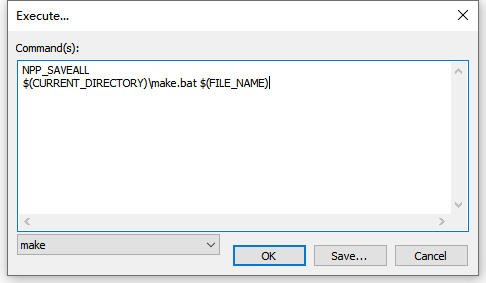
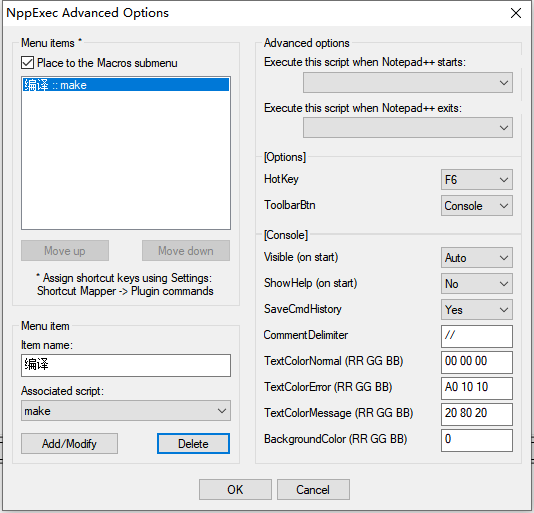
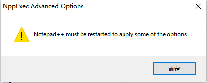
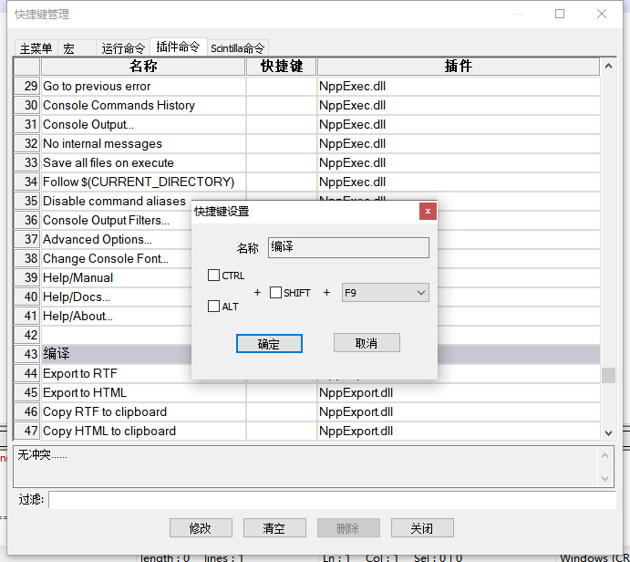

Notepad++一键编译
2020年6月17日
1. 保存脚本

预先安装好NppExec插件，功能键F6呼叫出Execute对话框，输入：
NPP_SAVEALL
$(CURRENT_DIRECTORY)\make.bat $(FILE_NAME)
按Save保存为“make”。
2. 加入宏菜单

菜单栏：插件→NppExec→Advanced Option...打开对话框，左下选择需要加速的脚本，即刚才保存的“make”，设置菜单项名称为“编译”，点击“Add/Modiffy”按钮将其添加到宏菜单。

点击OK后出现的对话框再确定。
3.设置快键

宏菜单点开“快捷键管理”对话框，选中刚才命名为“编译”的插件命令，选择功能键F9，确定后关闭就好了。